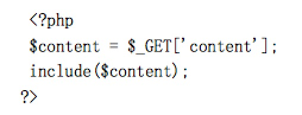
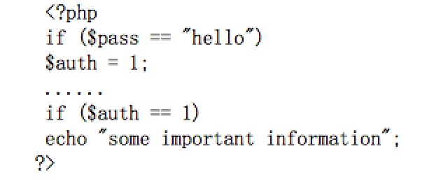
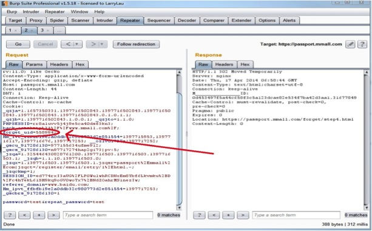

Presented by qhwlpg / 乌云qhwlpg / 360补天qhwlpg
1. SQL注入
2. XSS跨站脚本攻击
3. CSRF跨站请求伪造
4. Cookie欺骗
5. 验证不充分（上传漏洞、文件包含、任意文件读取、变量覆盖、越权操作、平行权限）
6. 逻辑漏洞
7. 解析漏洞
8. 第三方漏洞（WEB编辑器、WEB框架、WEB中间件）
9. 信息泄漏（目录遍历、目录扫描、IIS短文件、IIS脚本资源访问、ASP.NET Padding Oracle 漏洞、爆路径、%5C暴库、Google Hack、robots.txt）
10. 弱口令
由于程序中对用户输入检查不严格，用户可以提交一段数据库查询代码，根据程序返回的结果，获得某些他想得知的数据，这就是所谓的SQL Injection，即SQL注入。
1. 单引号判断
2. 数字型注入判断
① and 1=1 and 1=2
and 1 is null and 1 is not null
and user>0
② 参数进行运算 +1 -1 '+'→'%2B'
3. 字符型注入判断
①' and '1'='1 ' and '1'='2
4. 搜索型注入判断
①test%' and 1=1 and '%'=' test%' and 1=2 and '%'='
XSS表示Cross Site Scripting(跨站脚本攻击),它与SQL注入攻击类似，SQL注入攻击中以SQL语句作为用户输入，从而达到查询/修改/删除数据的目的，而在xss攻击中，通过插入恶意脚本，实现对用户游览器的控制。
你这可以这么理解CSRF攻击：攻击者盗用了你的身份，以你的名义发送恶意请求。CSRF能够做的事情包括：以你名义发送邮件，发消息，盗取你的账号，甚至于购买商品，虚拟货币转账......造成的问题包括：个人隐私泄露以及财产安全。
Cookie：Web服务器存放在客户端计算机的一些信息，主要用来客户端识别或身份识别等。Session,保存在服务器端的。Cookie欺骗攻击：攻击者通过修改存放在客户端的cookie来达到欺骗服务器认证目的。
① 客户端检测(javascript检测)
② 服务端检测(MIME类型检测)
③ 服务端检测(目录路径检测)
④ 服务端检测(文件扩展名检测)
易受攻击的代码片断：

攻击者用如下请求可以包含图片木马：
http://www.xxx.com/test.php?content=x.jpg
易受攻击的代码片段：

上面的代码首先检查用户的密码是否为"hello"，如果匹配的话，设置"$auth"
为"1"，即通过认证。之后如果"$suth"为"1"的话，就会显示一些重要信息。
这段代码假定"$auth"在没有设置值的时候是空的，但是攻击者可以创建任何
全局变量并赋值，通过类似"http://www.yxlink.com/test.php?auth=1"的方法，我
们完全可以欺骗这段代码，使它相信我们是已经认证过的。
找回密码设计缺陷 修改任意用户密码 
Apache 是从右到左开始判断解析，如果为不可识别解析，就再往左判断。
影响版本:0.5.,0.6., 0.7 <= 0.7.65, 0.8 <= 0.8.37